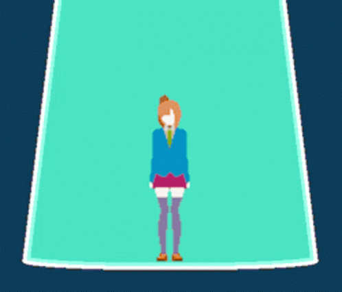
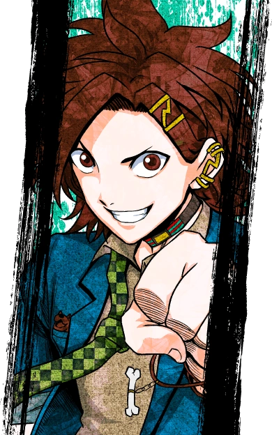
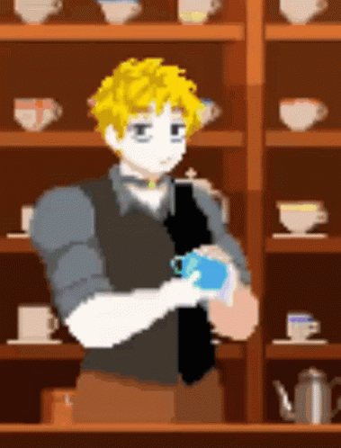
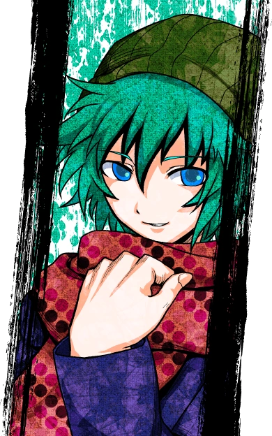
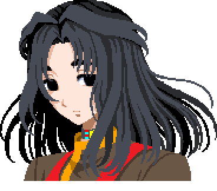

Sara Chidouin (Sara) is the main protagonist of "Your Turn To Die". She is the character that is controlled by you, the player. Her physical appearance consists of long orange hair tied into a ponytail, with her bangs in the front. She also has violet purple eyes. Her outfit is her school uniform. In terms of personality, Sara is a very strong-willed character who displays a stong sense of leadership within the entire cast of characters. She is the one that is relied on the most out of everybody. However, we see the weaker and more vulnerable side of her as the story progresses and some...incidents occur.
Jou Tazuna (Joe) is the deuteragonist of the series. He is Sara's best friend, and he is currently dating Sara's other good friend, Ryoko. His physical appearance consists of brown hair and eyes, as well as a piercing on his left ear with a matching hair clip. He is also wearing his school uniform. In his shirt pocket is a little dog keychain that Sara had gifted him for his birthday. Personality wise, he is known as an outgoing person who worries about other people more than he does himself. He is also considered the comedic relief character in this game.
Keiji Shinogi (Keiji) is another important character in this series. He is currently an ex-detective/policeman (the reason is told later on in the game) who oddly relies on and trusts Sara a little too much. His physical appearance is blonde, short hair with gray eyes. He wears a dress shirt with a black vest over it. His personality seems very laid-back, considering the situation everybody is in. However, later on in the game, his backstory is revealed, including why he became a policeman and why he quit. Because of how laid-back he is, the other characters do not trust him all that much.
Sou Hiyori (Sou?) is another important character in the series. As far as the player knows, Sou is a job-hopper. Other than that, pretty much nothing else is known about his past. Appearance-wise, he has a green beanie supporting greenish-blue hair. He also wears a purple jacket, as well as a pink polka dot scarf. Personality-wise, he seems like a very cautious and reserved person at the beginning. The characters do not trust him all that much. As the game progresses, the player begins to see a change in Sou, especailly a secret he has been hiding.
Kai Satou (Kai) is the final crucial character in this series. He might even be one of the most important characters. In terms of his appearance, he wears a black changshan, as well as brown pants and orange slippers. He also wears a red apron with orange splotches. His black hair is shoulder length with bangs parted down the middle. His accessories are the pan, ladle, and spatula he always has on him. Kai's personality can be described as very calm and collected, hardly showing any emotion. However, as we progress through the game, the player discovers a major secret of his that changes their perception of him entirely. You want to know the secret? You'll have to play to find out..
